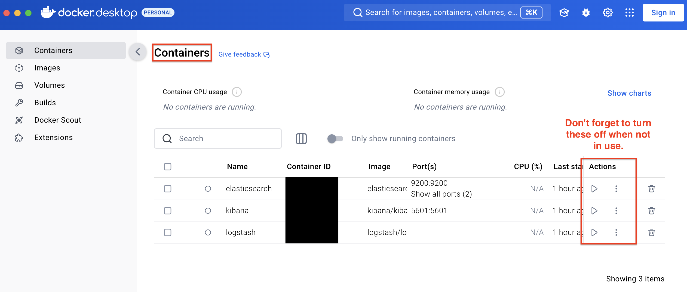

Install Docker
Installing ELK (Elasticsearch, Logstash and Kibana) on macOS can be simplified with Docker. Here are the steps to install ELK in Docker:
- First, make sure you have Docker installed on macOS. You can download and install the Docker Desktop version from the official Docker website: https://docs.docker.com/desktop/setup/install/mac-install/
Download ELK images
- Open Terminal and execute the following commands to download Docker images for Elasticsearch, Logstash and Kibana.
This will download the latest version of the ELK image. You can also choose other versions as needed.docker pull docker.elastic.co/elasticsearch/elasticsearch:7.14.0 docker pull docker.elastic.co/logstash/logstash:7.14.0 docker pull docker.elastic.co/kibana/kibana:7.14.0
Create a Docker network
- Run the following command in a terminal to create a Docker network for connecting ELK components.
docker network create elk-network
Start Elasticsearch
- Execute the following command to start the Elasticsearch container and connect it to the created Docker network.
This starts the Elasticsearch container and maps the container’s ports 9200 and 9300 to the corresponding ports on the host. “discovery.type=single-node” is a parameter to run Elasticsearch in single-node mode.docker run -d --name elasticsearch --net elk-network -p 9200:9200 -p 9300:9300 -e "discovery.type=single-node" docker.elastic.co/elasticsearch/elasticsearch:7.14.0
Start Logstash
- Execute the following command to start the Logstash container and connect it to the created Docker network.
This will start the Logstash container and connect to Elasticsearch.docker run -d --name logstash --net elk-network docker.elastic.co/logstash/logstash:7.14.0
Start Kibana
- Execute the following command to start the Kibana container and connect it to the created Docker network.
This starts the Kibana container and maps the container’s port 5601 to the corresponding port on the host.docker run -d --name kibana --net elk-network -p 5601:5601 docker.elastic.co/kibana/kibana:7.14.0
Access Kibana
- Open http://localhost:5601 in your browser and you should be able to access the Kibana console. From the console, you can configure indexing patterns, create visualizations and dashboards, and perform various Elasticsearch query operations.
Now, you have successfully installed and run the ELK (Elasticsearch, Logstash, and Kibana) stack in Docker. You can index and search data with Elasticsearch, process and transform data with Logstash, and visualize and monitor data with Kibana.
